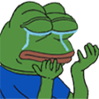
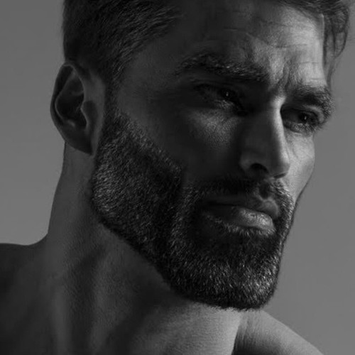

Смайлики в чате Майнкрафта
23.09.2022 | by KeRas1n
Благодаря кастомному ресурспаку, были добавлены эмодзи из BetterTTV прямиком в чат майнкрафта! На данный момент смайлы доступны только для подписчиков Pochka Premium
Спискок Эмодзи
:Sadge:

:omegalul:

:peepoHappy:

:PepeHands:
:EZ:

:peepoClown:

:gigachad:
- Список будет обновляться